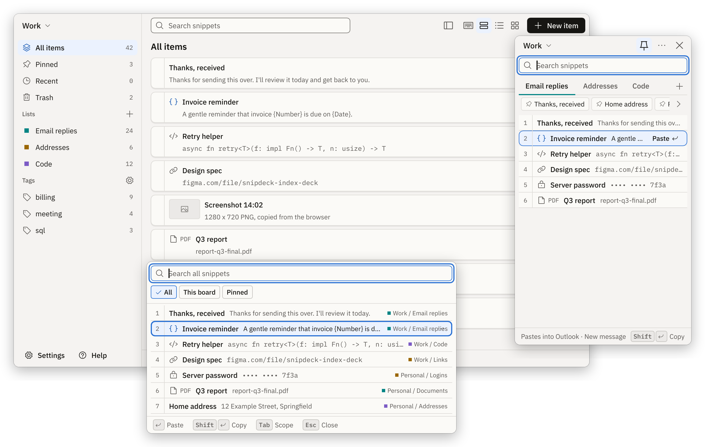
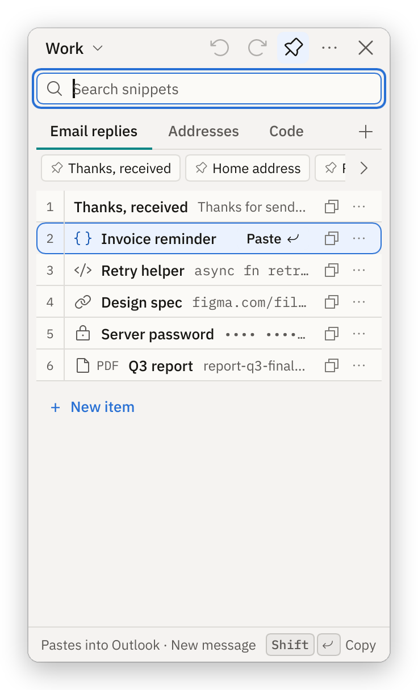
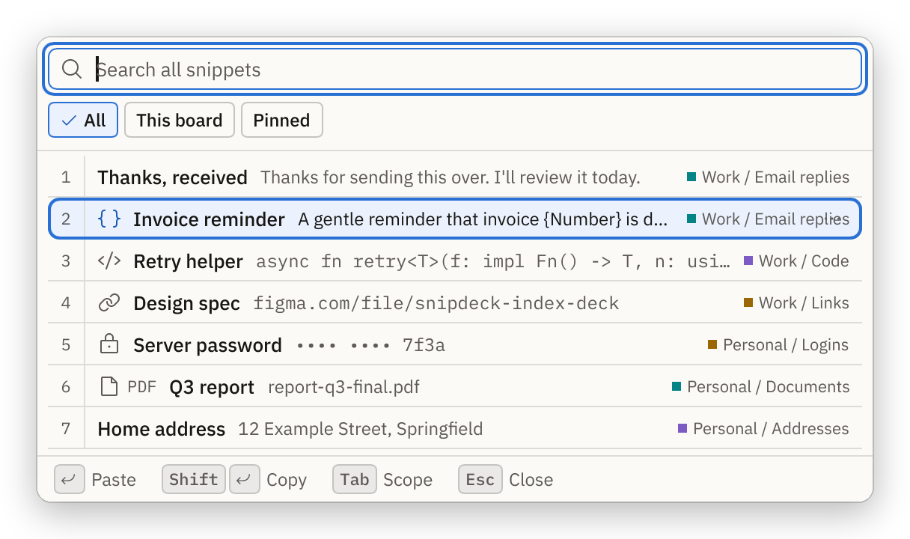
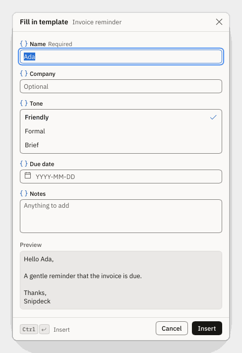
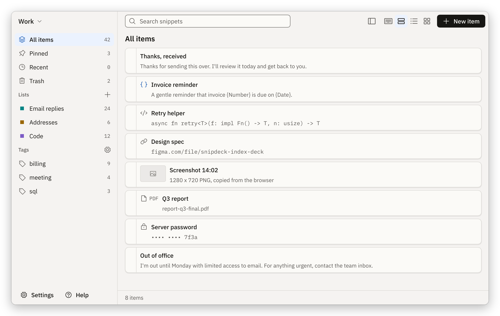

Your reusable snippets, one click from any app.
A small panel at the edge of your screen holds what you paste all the time. Click an item and it lands in the app you were typing in.

What it is
Snipdeck is a snippet deck. You arrange it yourself: boards hold lists, and lists hold items such as text, code, links, templates, images and files.
The Panel never takes focus from the app you are typing in, so a click pastes straight into it. The Picker opens a search box at your caret when your hands are on the keyboard.
It is not a clipboard history. It keeps only what you chose to keep.
A short tour
These pictures are rendered by the app's own test suite with sample data.
-
1
The Panel
Lists are tabs, pinned items sit in a strip under them, and the footer says where a click will go. Click an item, or press 1 to 9.

-
2
The Picker
Press Ctrl+Shift+Space, type a few letters, press Enter. It searches titles, tags and the start of each item, across every board or just this one.

-
3
Templates that ask
Placeholders such as the date, the time and the cursor position work in Free. A template can also ask you for a name, a choice or a due date each time. It shows a preview before it pastes. Asking is a Supporter feature.

-
4
The Main window
This is where you organise: boards, lists, tags, pins, the Trash with undo, and views from compact to tiles.

Hotkeys
You can change the four global hotkeys in Settings.
| Keys | What it does |
|---|---|
| Ctrl+Alt+Space | Show or hide the Panel |
| Ctrl+Shift+Space | Open the Picker at your caret |
| Ctrl+Shift+2 | Save the clipboard text as a new item |
| Ctrl+Alt+V | Paste the next item in the stack Supporter |
| Keys | What it does |
|---|---|
| Enter | Use the selected item: paste, or copy if no app is the target |
| Shift+Enter | Copy only, never paste |
| 1 to 9 | Use that row (when the search box is empty) |
| Ctrl+Tab | Next list |
| Ctrl+F | Search |
| Esc | Clear the search, then hide the Panel |
Privacy
Snipdeck works offline. There is no account, no server, no telemetry and no network port. Its fonts and icons are packaged with it.
- Your library is a folder on your PC:
%LOCALAPPDATA%\Snipdeck. Delete the folder and everything is gone. - Export is a zip file with plain JSON, so other tools can read it.
- Items you mark sensitive are masked on screen and kept out of Windows clipboard history. Both plans encrypt them on disk; Supporter adds a master password.
- The only download is the launcher fetching the app the first time you start it.
- This website uses no cookies, no analytics and nothing from other sites.
Free and Supporter
Free is fully usable, with up to 5 boards. Supporter pays for convenience and supports the app. Nothing nags you: no pop-ups, timers or reminders.
Snipdeck is open source under GPL-3.0, and the source is on GitHub.
Pay what you want, from A$5Suggested A$8. One-time. All 1.x updates.
- One payment, no subscription.
- Every 1.x update is included.
Can't afford it? Email me and I'll send a key, no questions.
| Feature | Free | Supporter |
|---|---|---|
| BoardsSeparate workspaces, such as Work and Personal. | Included, up to 5 | Included, unlimited |
| Lists and itemsAs many as you like, of every kind. | Included | Included |
| Panel and PickerPaste with a click, or search at your caret. | Included | Included |
| Save from the clipboardOne hotkey turns copied text into an item. | Included | Included |
| Dock to a screen edgeFold the Panel into a thin strip. | Included | Included |
| Templates with date, time and cursorFixed placeholders filled in when you paste. | Included | Included |
| Sensitive items, maskedHidden on screen and kept out of clipboard history. | Included | Included |
| Encryption on diskSensitive items are encrypted on disk, on every plan. | Included | Included |
| Backups, export, light and dark, 7 languagesDaily backups, a plain zip export, and your choice of theme. | Included | Included |
| Templates that askPrompt for a value or a choice each time you paste. | Not included | Included |
| Master passwordLock your encrypted items behind a password you choose. | Not included | Included |
| Paste stackQueue several items, then paste them one per hotkey press. | Not included | Included |
Install
- Download
snipdeck-<version>-windows-x64.zipfrom the latest release and unzip it. - Double-click
Snipdeck.bat. - The first start downloads the app once and checks it. After that, Snipdeck starts straight away, offline.
You need Windows 10 (1903 or newer) or Windows 11, 64-bit. You do not need Rust, Visual Studio or git. To remove it, run Snipdeck.bat uninstall: your library is kept.
Questions
Do I need an account or the internet?
No account, and no internet once it is installed. Snipdeck makes no network requests of its own.
Will it paste into every app?
Nearly. In a password box, a program running as administrator, or an app on your "never paste into" list, it copies instead and tells you why.
Is there a Mac or Linux version?
No. Snipdeck is for Windows 10 and 11, and other systems are not planned for version 1.
Can I take my snippets with me?
Yes. Settings, Your data, Export library saves one file: a zip with JSON.
What happens to my boards if I stay on Free?
You keep every board you have. You just cannot add more than 5.